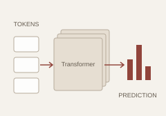
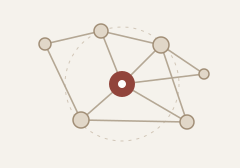

Graph Representation Learning
Learning effective representations for graph-structured data, with an emphasis on structure-aware and generalizable models.
I am an undergraduate student in Computer Science at Sichuan University .
My research interests broadly lie at the intersection of Graph Machine Learning, Large Language Models, and Structured Reasoning. I am particularly interested in how structured information can improve the reasoning and decision-making capabilities of foundation models.
I am also interested in efficient training and inference systems for modern language models as a complementary systems perspective.
Learning effective representations for graph-structured data, with an emphasis on structure-aware and generalizable models.
Exploring how structured graph information can support reasoning, retrieval, and reliability in large language models.
Studying agentic systems, tool use, memory, and structured reasoning for reliable intelligent systems.
LLM Agents & Post-training: agentic reasoning, tool use, memory, and post-training for structured tasks.
Engineering / Project
Developed topology-aware mission-planning and dynamic replanning components for UAV-based powerline inspection, including route optimization, mission construction, and integration with inspection workflows.

Course assignments Ongoing
Implementing core components of a modern language-model training stack from scratch, including BPE tokenization, Transformer modules, optimization, training, and efficient computation.
Focused on developing a deeper understanding of both language-model fundamentals and systems-level efficiency.

Learning / research preparation
A study plan centered on graph representation learning, graph neural networks, and graph convolutional networks.
MCM Meritorious Winner.
Independent study of publicly available course materials.